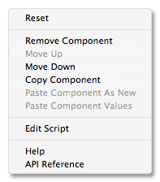
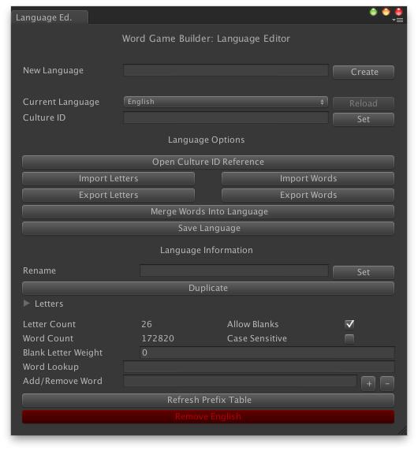
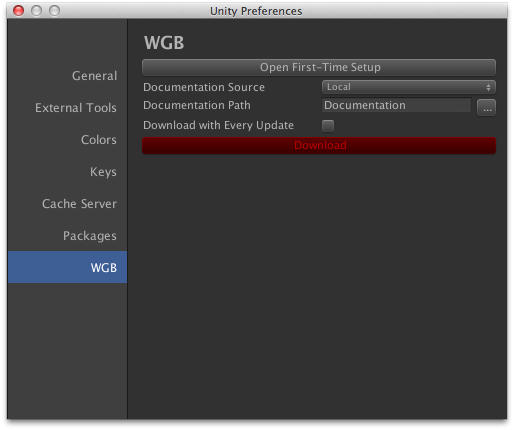

Overview
Word Game Builder adds some extra functionality to the standard Unity interface:
Context menus

Clicking on the gear in every Word Game Builder component will bring up a context menu. This menu contains some standard Unity and Word Game Builder commands. It also provides a direct link to the online documentation.
Language Editor

The Language Editor provides configuration options for different languages, and can create new languages, delete old ones, or modify word lists.
- New Language - Enter a language into this text field and press Create in order to create a new language.
- Current Language - The currently selected language for editing.
- Culture ID - A culture identifier for the language, used for all string operations.
- Open Culture ID reference - Opens a list of culture IDs (link here).
- Import Letters - Imports a CSV file of letters into the language.
Letter CSV Format:
| Column 1 | Column 2 | Column 3 |
| Human Readable Letter (string) | Machine Readable Letter (char) | Default Point Value (int) |
- Import Words - Imports a CSV file of words into the language. Words can be seperated by commas or new lines, and must use machine readable letters.
- Export Letters - Exports a CSV file of the current languages's letters.
- Export Words - Exports a CSV file of the current language's words.
- Merge Words into Language - Merges the words of a CSV file into the current language, ignoring duplicates.
- Save Language - Saves the language file. This must be called after some operations.
- Rename - Renames the language. This name must be unique.
- Duplicate - Duplicates the language.
- Letters - A editable list of all letters in the language.
- Allow Blanks - If enabled, the language can contain blank letters (blank letters are usually used as wildcards in word games).
- Case Sensitive - If enabled, all searches are case sensitive. For case sensitive languages, both upper and lower case letters must be defined.
- Blank Letter Weight - Controls the weight of blank letters for weighted random letter distributions.
Preferences Item

Word Game Builder contains a preferences item to change per-machine settings, located at Edit > Preferences (Windows) or Unity > Preferences (Mac OS X). Here, documentation can be downloaded and stored locally.